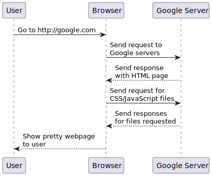

The purpose here is to go over some basic web stuff and get a server up and running, with maybe a web interface.
A source block with a $ in front generally means this is a command you
should run as your normal user from within a terminal or shell. Commands on
your system are programs, and you should either only run commands you
understand and/or originate from a trusted (by you) source. If the command is
prefixed with a # it means to run the command with elevated permissions,
such as the root user or as a sudoer using sudo. Generally commands that
want elevated permissions should be treated with greater scrutiny.
$ ls -al
This means copy ls -al and paste it into your terminal (on MacOS,
Terminal.app works just fine for this). Then press enter. You should see
some output from the command, or a lack of error. Sometimes seeing it do
nothing is okay. Once the command is complete, you’ll see the prompt displayed
again (usually ending with $) which means the shell is ready for the next
command.
Some instructions will also omit the $ entirely but provide some context
that this is a command you should be running. Usually this means you run the
command the same way you would as $, and NOT # (root).
Sometimes you’ll see what seems to be both $ and not $ in the same block.
Generally this means that the $ is the command you run, and the text that
follows that isn’t preceded by a $ is the output of the command(s).
For example:
$ ls
foo bar baz
Here we’re running ls and, as a contrived example, we’re seeing it print
foo bar baz as its output.
A terminal is a window that runs a shell. A shell is a program that lets you input commands and you can see the results. A good shell can provide lots of assistance in putting together commands, and has a means of composition of those commands. Composition is something we’ll get more into later. The commands themselves are too many to enumerate, and learning them is a place where you can spend indefinite amounts of time mastering. Focus on learning parts of the shell only a little bit at a time.
We’ll need some tools installed to ease this along.
Homebrew is needed to install some basic stuff. Follow the link and follow it’s instructions. See the shell and terminal commands section for learning how to install Homebrew.
Once you have that, we’ll want to install Homebrew’s cask system, which
allows us to install apps (which can be considered to be a little different
from commands and utilities). We’ll want to use cask later in your system
setup, so let’s install it now:
brew tap caskroom/cask
Once Homebrew is installed, we can install a recent version of Node.JS, which we’ll need for running a server. The version we install isn’t terribly important right now. Run this command to install Node:
brew install node
yarn is a replacement for npm. You don’t need to know npm but
understand there is a lot of legacy projects out there with their install
instructions using npm. For the most part, any place you see npm you can
substitute with yarn and the command will work fine. One notable exception
is that npm install <package> maps to yarn add <package>. Here,
<package> refers to the name of a package without the angle braces (<>).
A package named foo would be installed with yarn add foo.
Install yarn with Homebrew using this command:
$ brew install yarn
git is a version control system. It’s a vital tool for software
development as it performs incremental backups of your source code. It
provides a rich history (provided you leave messages for yourself) and
allows you to easily share your code with others.
I don’t recall if MacOS has a version pre-installed, but I do know that with Homebrew we can ensure we’re using it and also be on the latest version:
brew install git
Atom is a plenty good starter editor. It’s basic. It’s a pretty Notepad with plugins and indentation. For now, this is fine.
You can install Atom via homebrew as well!
brew cask install atom
Once this is done, you can run Atom from your terminal using the atom
command, or run it as an application from the /Applications directory. You
can also open Spotlight by pressing Command-Space and typing “atom” without
the quotes.
Your development directory is a place where you can throw all of your software
projects. It seems like everyone has their own convention and no two are
alike. You can’t really get this wrong, but generally you might be typing it a
bit so keeping it short and sweet is nice. For this doc we’re going to use
dev but really you can use anything you like so long as you can remember it
easily.
mkdir dev
mkdir creates the dev directory. Now we’ll enter the directory. mkdir is
a program that will only print something if something goes wrong, so if it
looks like nothing happened, that’s okay. No news is good news.
cd dev
After running this, you should see dev in your shell’s prompt.
Good job! Let’s take a minute to look around and not see a screen for a few minutes.
Let’s make sure your terminal is in your development directory.
$ pwd
/Users/logan/dev
Let’s make a directory for our project. This project will be about expressing our deep hatred of cats. Cats killed my parents, okay?
mkdir cat-hate
And enter the directory:
cd cat-hate
Now let’s let yarn initialize our project:
yarn init
It will prompt you with some questions. If you don’t know a good answer, or
are fine with its guess, you can use the default (which is the value in the
parenthesis ()). Enter default values by pressing enter.
Let’s also get git initialized.
git init
We’ll be running a Node server using a library called express. We can use
yarn to install it.
yarn add express
Now we’re going to open our editor. We can open it with a file (or even a
blank file that doesn’t exist yet) by giving the atom command an argument.
The argument is the name of the file we want to open or create. Let’s name it
server.js.
atom server.js
We need to pull in express. In Node, we do that using require.
Put this into your editor:
const express = require('express')
express is a function that produces an “application” in their terms. Let’s
create that now.
const app = express()
Now we’ll construct an endpoint by listening to GET requests. We’ll just
listen to ones directed at the root of our webapp for now.
app.get('/', (req, res) => { res.send('ohai') })
There’s a lot going on there, even for a very simple response handler. We’ll go over that in a bit, but let’s get it so we can run the server first, and then test that it works.
app.listen(3000, () => console.log('Example app listening on port 3000!'))
Okay, so all together this is what it should look like:
const express = require('express') const app = express() app.get('/', (req, res) => { res.send('ohai') }) app.listen(3000, () => console.log('Example app listening on port 3000!'))
Let’s run the app:
$ node server.js Example app listening on port 3000!
Now let’s make a new tab in your terminal (Command-T on MacOS). You might have
to cd back to your project directory:
cd ~/dev/cat-hate
Now we’ll test that it works with curl, a powerful tool for using and
debugging HTTP requests.
$ curl http://localhost:3000
ohai
In short, thousands of little assumptions we make in the world of technology came together and something actually worked.
In the long, let’s talk about networking.
Networked architecture exists as a series of abstract layers. We’ve heard so much about how computers are all about 1s and 0s but we need to derive meaning from those. Usually in the world of computing, we aren’t thinking about those individual bits. Instead we’re thinking in “abstract” terms. For our purposes, abstract means we’ve moved to a conceptual place where we can focus on only the things that matter about our topic. As we move between layers we can think about just the areas of focus for that layer, because we can assume other layers have done their jobs. This is a mental tool we use because the amount of things that need to happen for a web page to load is staggering. Breaking down these things into to tiny concepts that are easy to mentally digest is perhaps the hardest problem we have in computer engineering (and perhaps other forms of engineering as well).
Here we’ll go over the various network layers. You don’t need to memorize them, but knowing they are there is helpful. These are presented in order.
This is the medium in which the communication happens. This could be radio waves, a fucking wire, or even study hall notes. Barbed wire was used to demo Ethernet, so I’m told.
This layer groups up data into chunks called frames or packets. Ethernet
exists as one of these layers or a kind of data-link sublayer. Wireless
specifications also exist on this as well. The data link layer is where your
MAC address comes from.
Hey wait, aren’t we talking about networks already? Confusing! Well this
specifically refers to routing of network traffic over multiple devices.
This is how information from your computer travels over your wifi, goes
through your router, and then goes out to the Internet. Most often the
network layer you’ll be working with is IP (just IP) but there are
others.
This is primarily a layer about checking for errors and retransmission of
lost data. TCP and UDP are transport layers. Sometimes you hear TCP
referred to as TCP/IP but that’s mostly referring to how they typically go
together.
This layer is about handshakes and establishing persistent connections. It
also can handle forms of authentication and reconnection. TCP and UDP
both span across this and the transport layer.
This is primarily about encryption but could be anything that converts data from one form to another. Encryption is generally handled at the OS level.
These aren’t applications themselves, but means to communicate with
applications. How do you talk to a specific application on your computer? If
I run a server on my computer, will it be the only one? No. You can run lots
and lots of servers, and you’re probably running lots of them right now
without realizing it. In the world of TCP and UDP, applications are
denoted by something called a “port”. Some of them are reserved for specific
kinds of applications, but there’s not necessarily a strict enforcement
there.
HTTP (Hyper Text Transfer Proctocol) is an application layer protocol that we use for almost all of our web technology. The client (which is typically a web browser, but could also be virtually anything) sends something called a request to the server. The server processes this request, and sends back some kind of response.
When you go to a site like http://google.com, your browser sends a GET
request to Google. There’s some additional meta data your browser will send
along as well, such as saying automatically that you prefer US English, and
that it wants HTML. Google’s servers see this request, and the server
decides it will send you back a web page (in HTML) for the response. It will
also ensure the web page is in US English.
Your browser will see that Google’s homepage has link tags to CSS files,
so it will send additional requests to download those. If there are script
tags that have src attributes, it will also send requests for those. The
Google web servers will dutifully respond with the requested CSS and
JavaScript files in kind.

This is a sequence diagram that shows the communication process of doing something like visiting http://google.com.
curl is our command line HTTP tool. We can send requests with it like it
was a browser, and we can get the response back. We can give curl “flags”
that tell it to give us more information about what it’s sending and what it
receives. In the instructions above, we tested our server using curl
because it doesn’t tend to complicate things like the browser can easily do.
We can use curl to automate communication to any web server as well, and
since everyone has curl or can get it somehow, we can send curl commands
(as text) to anyone else and they can run it and verify our results. This is
handy when you need to get help with something and need to consistently
produce the same results across machines.
For our next trick, we’ll send some nice HTML.